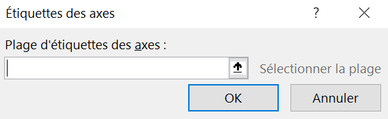
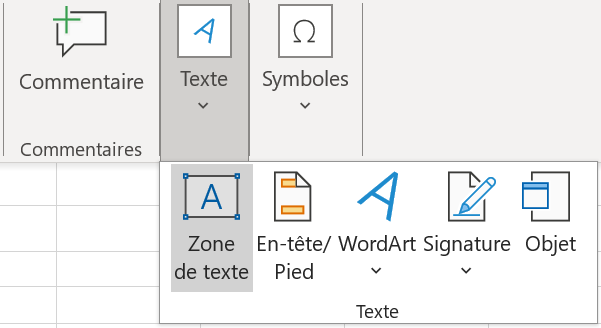

Dans ce laboratoire, l’objectif est de représenter la répartition de femmes d’origine pima vivant en Arizona selon leur indice de masse corporelle, ainsi que la répartition de femmes d’origine pima vivant en Arizona par présence de diabète, en fonction de l’indice de masse corporelle. Il s’agit donc de présenter les étapes de l’étude d’une variable quantitative continue, ainsi que celles de l’étude simultanée d’une variable quantitative continue avec une variable qualitative.
On introduit la notion de filtrage de données aberrantes, la création de classes pour des variables quantitatives continues, la création d’un histogramme et d’un polygone de fréquences, la mise en forme appropriée pour ces deux graphiques, ainsi que le calcul de mesures descriptives pour des variables quantitatives.
Pour cela, on utilise les variables IMC et Atteint.
Sous-section3.2.1L’étude d’une variable quantitative continue
Les étapes de l’analyse d’une variable quantitative continue sont les suivantes : filtrage de données aberrantes, création de classes pour les valeurs de la variable, groupement des données lors de la création du tableau croisé dynamique, mise en forme de ce tableau croisé dynamique, création d’un graphique approprié, tel qu’un histogramme ou un polygone de fréquences, calcul de mesures descriptives, et enfin, interprétation des résultats. Les étapes qui suivent mènent à l’analyse de l’indice de masse corporelle.
Sous-sous-section3.2.1.1Filtrer les valeurs aberrantes du tableau principal
Avant de générer un tableau croisé dynamique impliquant une variable quantitative, il est important d’effectuer une enquête préliminaire des données dans le but de filtrer des données aberrantes si nécessaire.
En appliquant un filtre à la variable IMC, on constate que certaines femmes ont enregistré un indice de masse corporelle de 0. Cette valeur étant impossible, il s’agit donc d’une valeur aberrante. On choisit de filtrer ces valeurs et de les exclure lors de la création du tableau de fréquences, de l’histogramme, ainsi que des calculs des mesures statistiques, car ces dernières pourraient fausser les interprétations. Les étapes suivantes mènent au filtrage du tableau principal Échantillon.
Ouvrir le classeur Données_Diabète.xlsx sauvegardé avec le travail fait aux laboratoires 1 et 2.
Dans le feuille Données, cliquer sur l’icône du filtre (petit triangle) à droite du titre de la colonne IMC (voir la Figure 3.2.1).
Figure3.2.1.Icône de filtre à droite du titre de la colonne IMC
Un menu déroulant s’affiche (voir la Figure 3.2.2).
Décocher le crochet à gauche de la valeur \(0\) (voir la Figure 3.2.2). Cliquer sur OK.
Figure3.2.2.Filtrage des valeurs nulles de l’IMC
Remarque3.2.3.Filtrer des données.
Malheureusement, ce filtrage ne s’applique que sur les données du tableau principal Échantillon et non sur les tableaux croisés dynamiques. Toutefois, il est pratique de filtrer les données brutes lors de la réalisation d’une partie d’une étude, afin de pouvoir comparer les résultats obtenus et leur conformité avec les données.
Sous-sous-section3.2.1.2Tableau croisé dynamique d’une variable quantitative continue
Pour réaliser l’étude d’une variable quantitative continue, il est nécessaire de construire un tableau de fréquences en regroupant les valeurs en classes, car il y a trop de valeurs différentes pour permettre une synthèse efficace. Le tableau croisé dynamique généré par Excel n’est pas adéquat, car il ne regroupe pas les valeurs des variables par défaut. On commence par rappeler les étapes de création d’un tableau croisé dynamique, soit celui de la répartition d’un échantillon de femmes d’origine pima vivant en Arizona selon l’indice de masse corporelle.
Dans le classeur Excel, ajouter une nouvelle feuille de calcul intitulé Étude IMC. Déplacer cette feuille en dernière position si Excel ne le fait pas automatiquement.
Sélectionner la cellule B3 dans cette feuille de calcul.
Glisser et déposer la variable IMC dans la zone de saisie Lignes, ainsi que deux fois dans la zone de saisie Valeurs (voir la Figure 3.2.4).
Figure3.2.4.Glissement de la variable IMC dans les zones de saisie Lignes et Valeurs
Dans la zone de saisie Valeurs, cliquer sur la flèche du menu déroulant du premier onglet (Nombre de IMC), puis sélectionner l’option Paramètres des champs de valeurs pour modifier le calcul. On veut le nombre de femmes pour la deuxième colonne (et non la somme comme Excel fait par défaut). Pour Nombre de IMC 2, on veut le pourcentage de femmes (voir la Sous-sous-section 1.2.8.2 pour référence).
Au final, le tableau croisé dynamique généré doit ressembler à la Figure 3.2.5.
Figure3.2.5.Les trois colonnes du tableau croisé dynamique final de la répartition de l’échantillon de femmes d’origine pima selon l’indice de masse corporelle
La première ligne du tableau croisé dynamique révèle que onze femmes ont enregistré un indice de masse corporelle de 0. Il est possible de constater que le tableau croisé dynamique n’a pas filtré les données contenant une valeur nulle comme le tableau principal Échantillon l’a fait. Il va falloir le refaire pour le tableau croisé dynamique.
Sous-sous-section3.2.1.3Filtrer les valeurs aberrantes d’un tableau croisé dynamique
Même si l’on a filtré les valeurs aberrantes nulles du tableau principal, ces dernières apparaissent tout de même dans le tableau croisé dynamique. Il existe plusieurs façons de les exclure. On choisit de le faire avant de regrouper les valeurs en classes.
Dans une cellule de la première colonne du tableau croisé dynamique généré à la Sous-sous-section 3.2.1.2, cliquer avec le bouton droit de la souris. Un menu contextuel s’affiche (voir la Figure 3.2.6).
Figure3.2.6.Affichage du menu contextuel de la première colonne du tableau croisé dynamique
Sélectionner l’option Filtres s’appliquant aux étiquettes suivi de l’option Est différent de (voir la Figure 3.2.7).
Figure3.2.7.Filtrage s’appliquant aux étiquettes
Une boîte de dialogue s’affiche à l’écran. Il faut choisir d’afficher les éléments pour lesquels l’étiquette est différent de \(0\text{.}\) Ainsi, dans la zone de saisie à droite de l’option est différent de, il faut taper la valeur 0 (voir la Figure 3.2.8) et cliquer sur OK.
Figure3.2.8.Afficher les éléments pour lesquels l’étiquette est différent de \(0\)
Le tableau croisé dynamique résultat exclut désormais les valeurs pour lesquelles l’IMC vaut 0.
Sous-sous-section3.2.1.4Créer des classes
Comme présenté, le tableau croisé dynamique de la Figure 3.2.5 n’est pas optimal pour l’analyse de la répartition des femmes selon l’indice de masse corporelle. Un regroupement des données en classes est nécessaire. Avant de procéder, il est important de déterminer le nombre optimal de classes et l’amplitude de ces dernières. Les choix par défaut d’Excel ne sont pas toujours adéquats. Il est donc recommandé de documenter clairement les décisions prises dans la feuille de calcul afin d’en conserver une trace. Les étapes suivantes mènent au groupement des données de la variable IMC.
Choix d’amplitude.
Dans la cellule G3 de la feuille de calcul Étude IMC, taper le titre Calcul de l’amplitude (voir la Figure 3.2.9).
Taper Nombre de classes dans la cellule G5, Étendue de l’IMC dans la cellule G6, Valeur minimale de l’IMC en G7, Amplitude théorique en G8, et finalement, Amplitude choisie dans la cellule G9 (voir la Figure 3.2.9).
Figure3.2.9.Section pour documenter le calcul de l’amplitude
On souhaite calculer le nombre théorique de classes à l’aide de la formule de Sturges, soit \(1+\dfrac{10}{3}\log{n}\text{,}\) où \(n\) est le nombre de données.
Dans Excel, on peut insérer des fonctions en saisissant directement le symbole = dans une cellule, puis en tapant manuellement la fonction. ATTENTION : il ne faut jamais oublier le symboler = avant d’insérer une fonction.
Il est également possible d’insérer une fonction à partir de l’onglet Formules (voir la Figure 3.2.10), puis en cliquant sur l’icône Insérer une fonction.
Figure3.2.10.Insérer une fonction à partir de l’onglet Formules
En cliquant sur l’icône Insérer une fonction, il est d’explorer les différentes fonctions disponibles comme les fonctions statistiques (voir la Figure 3.2.11).
Figure3.2.11.Exploration des fonctions statistiques d’Excel
Dans Excel, plusieurs fonctions de base existent pour faire des calculs. Celles-ci incluent la fonction MIN (renvoie la valeur minimale), la fonction MAX (renvoie la valeur maximale), la fonction NB (renvoie le nombre de données), etc. Malheureusement, lorsque l’on applique un filtre à une variable, comme le filtre appliqué à la variable IMC, on ne peut pas utiliser les fonctions de base d’Excel. Excel pallie à ce problème avec la fonction SOUS.TOTAL.
La fonction SOUS.TOTAL d’Excel permet de calculer certaines mesures statistiques (pas toutes) sur un sous-ensemble de données lorsqu’un filtre a été appliqué sur une variable (comme fait à la Sous-sous-section 1.2.5.1). Cela signifie qu’Excel peut faire certains calculs sur les données filtrées.
Dans la cellule H5, taper la formule =1+10/3*LOG(SOUS.TOTAL(2;IMC)) (voir la Figure 3.2.12).
La formule Excel LOG renvoie le logarithme de l’argument qui se trouve dans les parenthèses. Dans des formules Excel, on peut faire référence à des adresses de cellules ou au nom d’une plage de données. Il ne faut pas oublier le symbole * pour le produit.
Dans la fonction SOUS.TOTAL, le chiffre \(2\) fait référence au calcul du nombre de données. Les nombres \(1\) à \(11\) spécifie la fonction à utiliser pour calculer le sous-total. Le deuxième paramètre, soit IMC, fait référence au nom de la plage de données dont on souhaite calculer le sous-total. La fonction Excel NB renvoie le nombre de données de la plage de cellules sélectionnées. Si l’on mettait tout simplement =NB(IMC), ceci renverrait la valeur 768, soit le nombre total de cellules non vides de la variable IMC. Cependant, on veut exclure les femmes qui ont eu une valeur erronée de 0 comme indice de masse corporelle. La fonction SOUS.TOTAL permet d’exclure ces valeurs.
Figure3.2.12.Formule pour déterminer le nombre théorique de classes
Une fois la formule rentrée, taper Enter. On obtient environ \(10,6\text{.}\)
Figure3.2.13.Nombre théorique de classes selon la formule de Sturges
Dans la cellule H6, on souhaite déterminer l’étendue de l’indice de masse corporelle (valeur maximale moins la valeur minimale). Taper la formule =SOUS.TOTAL(4;IMC)-SOUS.TOTAL(5;IMC) (voir la Figure 3.2.14) suivie de la touche Enter.
La formule Excel SOUS.TOTAL(4;IMC) renvoie la plus grande valeur parmi la liste de valeurs (le maximum). La fonction Excel SOUS.TOTAL(5;IMC) renvoie la plus petite valeur parmi une liste de valeurs (le minimum).
Si l’on met la formule =MIN(IMC), ceci nous renvoie la valeur 0, le minimum de la série statistique non filtrée de l’indice de masse corporelle. Cependant, on veut exclure les femmes qui ont eu une valeur erronée de 0 comme indice de masse corporelle. On recherche plutôt la deuxième plus petite valeur.
Si l’on met la formule =MAX(IMC), on obtient la même valeur que =SOUS.TOTAL(4;IMC) puisqu’aucune valeur dans l’extrémité supérieure n’a été exclue.
Figure3.2.14.Formule pour déterminer l’étendue de l’IMC
L’étendue vaut\(48,9\text{.}\)
Dans la cellule H7, taper la formule =SOUS.TOTAL(5;IMC) suivie de la touche Enter (voir la Figure 3.2.15) pour déterminer la valeur minimale des données filtrées de l’indice de masse corporelle. Il est essentiel de connaître la valeur minimale pour s’assurer de l’inclure lorsque l’on regroupe les valeurs.
Figure3.2.15.Formule pour déterminer la valeur minimale de l’IMC (différente de 0)
La deuxième valeur la plus petite est \(18,2\text{.}\)
On veut déterminer l’amplitude théorique de chaque classe, soit l’étendue divisée par le nombre théorique de classes. Dans la cellule H8, taper la formule =H6/H5 suivie de la touche Enter (voir la Figure 3.2.16). Dans des formules Excel, on peut faire référence à des cellules. La cellule H6 correspond à l’étendue et la cellule H5 correspond au nombre théorique de classes.
Figure3.2.16.Formule pour déterminer l’amplitude théorique des classes
On obtient une amplitude théorique d’environ \(4,6\text{.}\) Ceci n’est pas un nombre entier. On choisit \(5\text{.}\) On écrit donc \(5\) dans la cellule H9 (voir la Figure 3.2.17).
Figure3.2.17.Détermination de l’amplitude choisieFigure3.2.18.Étapes pour déterminer l’amplitude des classes
Grouper les valeurs en classes.
Une fois l’amplitude des classes et la valeur de début déterminées, il est possible de forcer le regroupement voulu des données.
Remarque3.2.19.Afficher les élèments sans données.
Lorsque l’on groupe les valeurs d’un tableau croisé dynamique, il est bien de s’assurer d’afficher les éléments sans données, car sinon, il se peut qu’un intervalle vide soit manquant sans qu’on s’en aperçoive.
Les étapes suivantes mènent à l’affichage des classes sans données.
Dans une cellule de la première colonne du tableau croisé dynamique de l’indice de masse corporelle, cliquer sur le bouton droit de la souris (voir la Figure 3.2.20). Un menu déroulant s’affiche.
Figure3.2.20.Menu déroulant de la première colonne d’un tableau croisé dynamique
Cliquer sur l’option Paramètres de champ... (voir la Figure 3.2.20).
Une boîte de dialogue s’affiche (voir la Figure 3.2.21). Cliquer sur l’onglet Disposition et impression. Cocher ensuite l’option Afficher les éléments sans données.
Figure3.2.21.La boîte de dialogue pour afficher les éléments sans données
En cochant cette option, on s’assure que lorsque l’on va grouper les valeurs de l’indice de masse corporelle en classes, Excel va afficher les classes qui ne contiennent aucun élément.
Cliquer sur OK.
Dans une cellule de la première colonne du tableau croisé dynamique, cliquer à nouveau sur le bouton droit de la souris (voir la Figure 3.2.22). Un menu déroulant s’affiche.
Figure3.2.22.Menu déroulant de la première colonne d’un tableau croisé dynamique
Cliquer sur l’option Grouper.
Une boîte de dialogue s’affiche permettant à l’utilisateur de choisir un groupement approprié pour les données (voir la Figure 3.2.23). Excel propose une borne inférieure (soit \(0\text{,}\) la valeur minimale de la variable IMC, une borne supérieure (soit \(67,1\text{,}\) la valeur maximale de l’IMC) et une amplitude pour les classes (soit \(10\)).
Taper \(15\) comme valeur de début au lieu du choix suggéré d’Excel de \(0\) et taper \(5\) comme amplitude au lieu de 10 (voir la Figure 3.2.23)
Figure3.2.23.La boîte de dialogue pour grouper les données d’un tableau croisé dynamique, ainsi que le choix de 15 comme valeur minimale et 5 comme amplitude des classes
En choisissant \(15\) comme valeur minimale de la première classe, on s’assure d’inclure la valeur minimale de \(18,2\text{.}\) La valeur \(15\) est un choix logique puisque c’est un multiple de \(5\text{.}\)
Cliquer sur OK. Le tableau croisé dynamique résultant groupe les valeurs de la variable IMC en classe d’amplitude valant \(5\) (voir la Figure 3.2.24). Puisque l’on a appliqué un filtre excluant les femmes enregistrant une valeur erronée de \(0\text{,}\) le tableau commence à \(15\text{.}\)
Figure3.2.24.Tableau croisé dynamique commençant à 15 avec des classes d’amplitude 5
On remarque que les trois dernières classes (excluant la classe \(>70\)), celles de \(55\) à \(60\text{,}\)\(60\) à \(65\) et \(65\) à \(70\text{,}\) contiennent un très faible pourcentage de données. Dans ce cas, il est conseiller de créer une classe ouverte lorsque les premières ou les dernières classes ont peu de données (moins de \(1\%\) chacune) afin de faciliter l’interprétation des données.
Dans une cellule de la première colonne du tableau croisé dynamique, cliquer sur le bouton droit de la souris. Sélectionner l’option Grouper à nouveau. Taper \(50\) comme valeur de fin, soit la limite inférieure de la première classe ouverte (voir la Figure 3.2.25).
Figure3.2.25.Choix de 50 comme fin pour créer une classe ouverte
Lorsque vient le temps de construire l’histogramme correspondant à ce tableau, on ne peut pas avoir une classe ouverte. Ainsi, on ferme la dernière classe en lui donnant la même amplitude que les autres classes. Ceci évite d’avoir beaucoup de bandes avec peu de données. Il ne faut cependant pas oublier d’écrire une note pour informer le lecteur de ce choix.
Cliquer sur OK. Le tableau croisé dynamique résultant est présenté à la Figure 3.2.26.
Figure3.2.26.Tableau croisé dynamique finale pour la variable IMC
Dans un espace sous le tableau croisé dynamique, faire la mise en forme du tableau de fréquences correspondant à la répartition de femmes selon l’indice de masse corporelle. La version finale du tableau de fréquences est présentée à la Figure 3.2.27 (voir la Sous-section 2.2.2).
Figure3.2.27.Version définitive du tableau de fréquences de la variable IMC
Sous-sous-section3.2.1.5Créer un histogramme
Pour représenter la répartition d’un échantillon de femmes en fonction de l’indice de masse corporelle, soit une variable quantitative continue, l’histogramme est un choix pertinent de graphique lorsque le nombre d’unités statistiques est important.
Dans le tableau de fréquences de la Figure 3.2.27, la dernière classe est désormais fermée de 50 à 55. Cependant, trois données se situent entre 55 et 60, et une autre entre 65 et 70. Cela réduit légèrement le nombre de classes par rapport aux prévisions faites à la Sous-sous-section 3.2.1.4. Afin d’éviter un histogramme avec plusieurs bandes aux extrémités contenant peu de données, le graphique à construire devrait respecter les choix effectués du tableau de fréquences correspondant.
Les étapes qui suivent mènent à la construction de l’histogramme représentant la répartition de l’échantillon de femmes d’origine pima selon leur indice de masse corporelle.
Sélectionner la plage de données représentant les fréquences relatives de l’indice de masse corporelle, soit la plage de cellules D5:D12 (voir la Figure 3.2.28). Ne pas sélectionner les classes de l’indice de masse corporelle, ni les titres des colonnes, ni les données de la ligne Total.
Figure3.2.28.Sélection des fréquences relatives de l’IMC
Copier la plage sélectionnée et coller ces valeurs dans la cellule H19 (voir la Figure 3.2.29).
Ajouter une classe fictive nulle avant la première valeur et après la dernière valeur (\(0\%\) dans les cellules H18 et H27) (voir la Figure 3.2.29). Cette étape vise à faciliter la mise en forme de l’histogramme et à améliorer son esthétique.
Il faut écrire les bornes inférieures des classes une à la suite de l’autre, commençant par la borne inférieure de la première classe et finissant par la borne supérieure de la dernière. Dans la cellule G19, écrire la borne inférieure de la première classe, soit \(15\text{.}\) Dans la cellule G20, écrire la borne inférieure de la deuxième classe, soit \(20\text{.}\) Dans la cellule G21, écrire \(25\) (voir la Figure 3.2.29).
Sélectionner la plage de cellules G19:G21 (voir la Figure 3.2.29). La plage est encadré d’une bordure verte et un petit carré vert apparaît dans le coin inférieur droit. Approcher le curseur au-dessus du carré vert. Dès qu’une croix noire apparaît, double-cliquer (voir la Figure 3.2.29 et la Sous-sous-section 1.2.7.2).
Figure3.2.29.Séquence de collage des fréquences relatives de l’IMC et inscription des bornes inférieures des classes
Sélectionner les valeurs des fréquences relatives de la colonne de droite incluant les \(0\%\) avant et après, soit la plage de cellules G18:H27 (voir la Figure 3.2.30).
Figure3.2.30.Sélection des fréquences relatives
Cliquer sur l’onglet Insertion. Dans le groupe Graphiques, cliquer sur l’icône Insérer un histogramme ou un graphique à barres (voir la Figure 3.2.31).
Figure3.2.31.Sélection de l’icône Insérer un histogramme ou un graphique à barres
Dans la section Histogramme 2D, sélectionner la première option (voir la Figure 3.2.31). Le graphique ci-dessous s’affiche dans la feuille de calcul (voir la Figure 3.2.32)
Figure3.2.32.Graphique créé après la sélection d’insérer un histogramme 2D
Il est évident que l’allure de ce graphique ne correspond pas à celle d’un histogramme. Il faut effectuer sa mise en forme.
Les bandes d’un histogramme doivent être collées. Sur une des bandes, cliquer avec le bouton de droite de la souris et sélectionner l’option Mettre en forme une série de données (voir la Figure 3.2.34).
Figure3.2.34.Sélection de l’option Mettre en forme une série de données
Une boîte de dialogue grise avec des options de séries s’affiche à la droite de la feuille de calcul (voir la Figure 3.2.35).
À l’option Largeur des intervalles, Excel met \(219\%\) par défaut. Pour un histogramme, on veut que la largeur entre les bandes soient de \(0\%\text{.}\) Effacer \(219\) et taper \(0\) (voir la Figure 3.2.35).
Figure3.2.35.Mettre \(0\%\) comme largeur des intervalles entre les bandes au lieu de \(219\%\)
L’allure des bandes est désormais la suivante (voir la Figure 3.2.36).
Figure3.2.36.Histogramme avec \(0%\) comme largeur des intervalles
Cliquer avec le bouton de droite sur une des bandes et sélectionner à nouveau l’option Mettre en forme une série de données. Sélectionner le premier icône Remplissage et couleur qui ressemble à un pot de peinture (voir la Figure 3.2.37). Dans le menu Bordure, il est possible de modifier la couleur des bordures des bandes de l’histogramme. Choisir la couleur noire en trait plein (voir la Figure 3.2.38 pour le résultat).
Figure3.2.37.Sélection d’une bordure noire pour les bandes de l’histogrammeFigure3.2.38.Bandes de l’histogramme avec une bordure noire
Il faut ajuster les valeurs de l’axe horizontal pour les faire correspondre aux bornes des classes de l’indice de masse corporelle. Cliquer sur une des bandes de l’histogramme avec le bouton de droite de la souris et sélectionner l’option Sélectionner des données... (voir la Figure 3.2.39).
Figure3.2.39.Sélection de l’option Sélectionner des données...
Une boîte de dialogue s’affiche. Sous l’option Étiquettes de l’axe horizontal (abscisse) (menu droit de la boîte), cliquer l’icône Modifier (voir la Figure 3.2.40).
Figure3.2.40.Sélection de l’icône Modifier
Une autre boîte de dialogue s’affiche et permet la sélection d’une plage de données (voir la Figure 3.2.41).

Figure3.2.41.Boîte de dialogue pour la sélection des étiquettes de l’axe horizontal
Sélectionner la plage de cellules G19:G27, soit les valeurs \(15\) à \(55\) (voir la Figure 3.2.42).
Figure3.2.42.Sélection de la plage de cellules G19:G27
Cliquer sur OK deux fois. L’histogramme résultant ressemble à la Figure 3.2.43.
Figure3.2.43.Histogramme avec les bonnes valeurs sur l’axe des abscisses
Les valeurs des étiquettes des abscisses ne sont pas bien alignées. Il faut les aligner à droite. Cliquer sur une des valeurs de l’abscisse jusqu’à ce que l’entièreté des valeurs soit comprise dans un encadré. Cliquer sur l’onglet Accueil. Dans le groupe Alignement, cliquer sur l’icône Aligner à droite (voir la Figure 3.2.44).
Figure3.2.44.Sélection de l’option Aligner à droite
L’histogramme résultant ressemble à la Figure 3.2.45.
Figure3.2.45.Alignement à droite des valeurs de l’axe des abscisses
Il est possible d’ajouter les étiquettes des fréquences relatives au-dessus des bandes. Cliquer avec le bouton de droite sur une des bandes de l’histogramme et sélectionner l’option Ajouter des étiquettes de donnéesFigure 3.2.46.
Figure3.2.46.Sélection de l’option Ajouter des étiquettes de données
L’histogramme résultant ressemble à la Figure 3.2.47.
Figure3.2.47.Ajout des étiquettes de données
Comme il y a un saut de valeurs entre la première classe et l’axe des ordonnées, il est recommandé de l’indiquer dans une note au bas du graphique.
L’étape finale consiste à mettre la source des données en dessous de l’histogramme (voir la Figure 3.2.48).
Figure3.2.48.Version définitive de l’histogramme avec la source des données et la note de saut
Sous-sous-section3.2.1.6Mesures descriptives
Avec Excel, il est possible de calculer les mesures descriptives d’une variable comme les mesures de tendance centrale (moyenne, médiane et mode), les mesures de dispersion (écart type et coefficient de variation) et les mesures de position (quantiles). Pour approfondir l’étude de l’indice de masse corporelle de l’échantillon de femmes d’origine pima, on va calculer et interpréter plusieurs mesures. De plus, on a jugé bon de comparer les valeurs des mesures descriptives avec et sans le filtrage des valeurs nulles de l’indice de masse corporelle.
Mesures descriptives sans filtre.
On commence par créer un tableau pour reporter toutes les mesures statistiques que l’on va calculer.
Dans la cellule K2 de la feuille de calcul Étude IMC, taper le titre Mesures descriptives de l’indice de masse corporelle d’un échantillon de femmes d’origine pima, Arizona (voir la Figure 3.2.49).
Figure3.2.49.Titre du tableau de mesures descriptives
Puisque le titre est long, on va fusionner quelques cellules et centrer le texte.
Sélectionner la plage de cellules K2:L3 (voir la Figure 3.2.50).
Figure3.2.50.Sélection des cellules K2:L3
Cliquer sur l’onglet Accueil. Cliquer sur l’icône Alignement et sélectionner l’option Fusionner et centrer ainsi que l’option Renvoyer à la ligne automatiquement (voir la Figure 3.2.51).
Figure3.2.51.Sélection des options Fusionner et centrer et Renvoyer à la ligne automatiquement
Ajuster la taille des colonnes K et L ainsi que celle des lignes 2 et 3 pour que le titre soit bien visible en entier.
Dans les cellules K4:K12, taper le nom des mesures descriptives à calculer (voir la Figure 3.2.52).
Figure3.2.52.Mesures descriptives à calculer
Ajouter une bordure noire à ce tableau (voir la Figure 3.2.53).
Figure3.2.53.Bordure au tableau de mesures descriptives
Si on ne connaît pas la formule pour la fonction que l’on veut, on peut faire une recherche (voir la Figure 3.2.10 et la Figure 3.2.11).
Pour les fonctions statistiques, les formules sont assez intuitives. Pour le nombre de données, la formule est NB. Dans la cellule L4, taper =NB(IMC) et appuyer sur la touche Enter (voir la Figure 3.2.54).
On voit maintenant l’avantage d’avoir nommé la variable IMC dans le laboratoire \(1\text{.}\) Il n’est pas nécessaire de retourner à la feuille de calcul Données et de sélectionner la plage de données avec les valeurs de l’IMC.
Dans la cellule L5, taper =MIN(IMC) et appuyer sur la touche Enter (voir la Figure 3.2.54).
Sans filtre, on rappelle que le minimum de l’IMC est \(0\text{.}\)
Dans la cellule L6, taper =MAX(IMC) et appuyer sur la touche Enter (voir la Figure 3.2.54).
Dans la cellule L7, taper =MOYENNE(IMC) et appuyer sur la touche Enter (voir la Figure 3.2.54).
Dans la cellule L8, taper =MEDIANE(IMC) et appuyer sur la touche Enter (voir la Figure 3.2.54).
Dans la cellule L9, taper =MODE.SIMPLE(IMC) et appuyer sur la touche Enter (voir la Figure 3.2.54).
Dans la cellule L10, taper =ECARTYPE.STANDARD(IMC) et appuyer sur la touche Enter (voir la Figure 3.2.54). La formule ECARTYPE.PEARSON calcule l’écart type de données issues d’une population. La formule ECARTYPE.STANDARD renvoie l’écart type corrigé de données provenant d’un échantillon.
Pour le calcul du coefficient de variation, Excel ne dispose pas de formule intégrée dans son logiciel. Cependant, comme le calcul repose sur la moyenne et l’écart type, il peut être facilement effectuer manuellement. Dans la cellule L11, taper =L10/L7 et appuyer sur la touche Enter. Il est possible de sélectionner les cellules L10 et L7 au lieu de les taper (voir la Figure 3.2.54).
Figure3.2.54.Formules pour calculer les différentes mesures descriptives de l’IMC
Afficher le coefficient de variation en pourcentage. Sélectionner la cellule L11. Cliquer sur l’onglet Accueil. Dans le menu de l’icône Nombre, cliquer sur l’option Style de pourcentage (%) (voir la Figure 3.2.55).
Figure3.2.55.Afficher le coefficient de variation en pourcentage
Dans la cellule L12, taper =CENTILE.INCLURE(IMC;0,25) et appuyer sur la touche Enter (voir la Figure 3.2.56). Le centile recherché est le \(25^{\text{e}}\text{.}\) Le deuxième paramètre à inscrire dans la formule Excel est le centile recherché en notation décimale. Pour les quartiles, Excel a une formule lui étant dédiée, soit QUARTILE.INCLURE.
Figure3.2.56.Formule pour calculer le premier quartile de l’IMC
Les valeurs des mesures sans filtrage se retrouvent à la Figure 3.2.57
Figure3.2.57.Mesures descriptives de l’IMC sans filtrage
Centrer chaque mesure descriptive dans sa cellule et l’afficher avec une décimale (sauf pour le nombre de données) à l’aide des fonctionnalités disponibles dans l’onglet Accueil (voir la Figure 3.2.58).
Figure3.2.58.Formatage des mesures descriptives de l’IMC
Mesures descriptives avec filtre.
Puisque la variable IMC du tableau Échantillon a été filtrée, on est en mesure d’effectuer des calculs avec les données filtrées.
Dans la feuille de calcul Étude IMC, copier la plage de cellules K2:L12.
Coller cette plage de cellules dans les cellules N2:O12. Supprimer les valeurs des mesures statistiques des cellules O4:O12 en sélectionnant la plage et en cliquant sur la touche suppr du clavier. Modifier le titre pour qu’il lise Mesures descriptives de l’indice de masse corporelle d’un échantillon filtré de femmes d’origine pima, Arizona
Ajuster la taille des colonnes N et O ainsi que les lignes \(2\) et \(3\) au besoin.
Dans la cellule O4, taper =SOUS.TOTAL(2;IMC) et appuyer sur la touche Enter (voir la Figure 3.2.59).
Le chiffre \(2\) fait référence au calcul du nombre de données. Les nombres \(1\) à \(11\) spécifie la fonction à utiliser pour calculer le sous-total. Le deuxième paramètre, soit IMC, fait référence à la plage de données dont on souhaite calculer le sous-total.
Figure3.2.59.Formule pour calculer le nombre de données du sous-total de la variable IMC filtrée
Dans la cellule O5, taper =SOUS.TOTAL(5;IMC) et appuyer sur la touche Enter (voir la Figure 3.2.60).
Dans la cellule O6, taper =SOUS.TOTAL(4;IMC) et appuyer sur la touche Enter (voir la Figure 3.2.60).
Dans la cellule O7, taper =SOUS.TOTAL(1;IMC) et appuyer sur la touche Enter (voir la Figure 3.2.60).
Malheureusement, Excel n’est pas en mesure de calculer la médiane du sous-total d’une plage de données. Il est donc nécessaire d’utiliser la fonction Excel SI, fonction qui permet d’appliquer des conditions lors de l’emploi d’une formule. Dans la cellule O8, taper =MEDIANE(SI(IMC <> 0 ;IMC)) et appuyer sur la touche Enter (voir la Figure 3.2.60).
SI(IMC <> 0 ;IMC) renvoie les valeurs de l’IMC différentes de \(0\text{.}\) Excel fait ensuite le calcul de la médiane de ces valeurs.
Malheureusement, Excel n’est pas en mesure de calculer le mode du sous-total d’une plage de données. Il faut donc utiliser la fonction Excel SI encore une fois. Dans la cellule O9, taper =MODE.SIMPLE(SI(IMC <> 0 ;IMC)) (voir la Figure 3.2.60).
Dans la cellule O10, taper =SOUS.TOTAL(7;IMC) et appuyer sur la touche Enter (voir la Figure 3.2.60).
Dans la cellule O11, taper =O10/O7 et appuyer sur la touche Enter (voir la Figure 3.2.60).
La fonction SOUS.TOTAL ne permet pas de calculer des centiles. Il faut utiliser la fonction SI. Dans la cellule O12, taper =CENTILE.INCLURE(SI(IMC<> 0;IMC);0,25) et appuyer sur la touche Enter (voir la Figure 3.2.60).
Les valeurs des mesures descriptives de la variable IMC filtrée se retrouvent à la Figure 3.2.60
Figure3.2.60.Mesures descriptives de l’IMC filtrée
Pour une étude préliminaire d’un échantillon, le troisième quartile est une mesure pertinente pour examiner l’allure globale d’une distribution et l’étalement des données. Combiné avec le premier quartile, il permet de détecter une éventuelle asymétrie dans la distribution des données. Un tableau final des mesures descriptives d’une étude préliminaire de la variable IMC filtrée se retrouvent à la Figure 3.2.61.
Figure3.2.61.Mesures descriptives d’une étude préliminaire de l’IMC filtrée
Le diagramme à quartiles, communément appelé la boîte à moustaches si le diagramme est placé horizontalement, illustre le premier quartile, la médiane, le troisième quartile, une valeur minimale qui est située à une distance d’une fois et demi l’écart interquartile en dessous du premier quartile, ainsi qu’une valeur maximale située à une distance d’une fois et demi l’écart interquartile au-dessus du troisième quartile. Ce graphique permet également de détecter d’un coup d’oeil les asymétries possibles à l’aide de la longueur des moustaches, les deux lignes qui s’étendent des quartiles aux valeurs minimale et maximale.
Avec Excel, les détails pour tracer un diagramme à quartiles de la variable IMC sont présentées ci-dessous. Ces étapes ne sont pas à faire pour ce laboratoire. Elles sont simplement présentées pour démontrer la pertinence de ce type de graphique.
Dans la feuille Données, sélectionner la plage de données de la variable dont on souhaite tracer le diagramme à quartiles. Ici, c’est la variable IMC. S’assurer que les données de cette variable sont filtrées pour enlever les valeurs nulles. La sélection devrait être H6:H773, ou H17:H773 (quand les valeurs sont ordonnées en ordre croissant et n’incluent pas les valeurs nulles).
Cliquer sur l’onglet Insertion et sélectionner l’option Boîte à moustaches (voir la Figure 3.2.62).
Figure3.2.62.Insertion d’une boîte à moustaches
En cliquant avec le bouton droit sur le graphique, déplacer ce dernier à la feuille Étude IMC, dans un endroit vide.
Figure3.2.63.Déplacer la boite à moustaches
Faire un clic avec le bouton droit sur les données, cliquer sur Mettre en forme une série de données,
Faire la mise en forme du graphique. Il devrait ressembler au graphique de la Figure 3.2.64. À noter que les valeurs numériques ont été ajoutées manuellement pour montrer l’utilité de ce type de graphique.
Figure3.2.64.Boîte à moustaches de la variable IMC
Interprétation des mesures descriptives.
Le calcul d’une mesure descriptive n’est pas complet sans son interprétation.
Dans la feuille de calcul Étude IMC, cliquer sur l’onglet Insertion.
Cliquer sur l’icône Texte suivi de l’option Zone de texte (voir la Figure 3.2.65).

Figure3.2.65.Insertion d’une zone de texte
Cliquer, en maintenant enfoncé le bouton de gauche de la souris, un endroit sous le tableau des mesures statistiques de l’IMC filtrée. Glisser le curseur vers la droite pour créer la zone de texte de taille désirée.
Interpréter chaque mesure statistique de l’indice de masse corporelle filtrée.
Sous-section3.2.2L’étude simultanée de deux variables dont l’une quantitative continue
Pour réaliser l’étude simultanée d’une variable quantitative continue et d’une variable qualitative, il est nécessaire de construire un tableau de fréquences à double entrée. Dans cette section, on va approfondir l’étude de l’indice de masse corporelle de l’échantillon de femmes d’origine pima, cette fois-ci par atteinte du diabète ou non.
Sous-sous-section3.2.2.1Tableau croisé dynamique à double entrée
Dans le classeur Excel, ajouter une nouvelle feuille de calcul intitulé Étude IMC_Atteinte. Déplacer cette feuille en dernière position si Excel ne le fait pas automatiquement.
Sélectionner la cellule B3 dans cette feuille de calcul.
Pour créer un tableau à double entrée, il faut placer une variable en ligne et une variable en colonne. Glisser et déposer la variable IMC dans la zone de saisie Lignes. Glisser et déposer la variable Atteinte dans la zone de saisie Colonnes (voir la Figure 3.2.66).
Figure3.2.66.Glissement de la variable IMC dans la zone de saisie Lignes et de la variable Atteinte dans la zone Colonnes
Les classes de la variable IMC sont désormais en lignes, et les deux modalités de la variable Atteinte sont en colonnes. Il est possible de constater que l’indice de masse corporelle, variable quantitative continue, a été regroupé en classes avec le même groupement que fait à la Sous-sous-section 3.2.1.4 (voir la Figure 3.2.67).
Figure3.2.67.Tableau croisé dynamique vide de la variable IMC en lignes et la variable Atteinte en colonnes
Glisser et déposer la variable IMC dans la zone de saisie Valeurs (voir la Figure 3.2.68). On aurait pu choisir la variable Atteint.
Figure3.2.68.Variable IMC dans la zone de saisie Valeurs
Dans la zone de saisie Valeurs, cliquer sur la flèche du menu déroulant de la variable, puis sélectionner l’option Paramètres des champs de valeurs pour modifier le calcul.
Dans l’onglet Synthèse des valeurs par, s’assurer que le type de calcul sélectionné est Nombre puisque l’on veut compter le nombre de femmes dans chaque catégorie. Ensuite, cliquer sur l’onglet Afficher les valeurs, suivi de la flèche du menu déroulant et sélectionner l’option % du total de la colonne (voir la Figure 3.2.69).
Figure3.2.69.Sélection du pourcentage du total de la colonne
Le choix d’afficher les valeurs en pourcentage du total de la colonne est déterminé en fonction de l’analyse souhaitée. L’objectif est de mettre en évidence la répartition des femmes d’origine pima, PAR présence de diabète, selon l’indice de masse corporelle. On obtient le tableau croisé dynamique de la Figure 3.2.70
Figure3.2.70.Les trois colonnes du tableau croisé dynamique final de la répartition des femmes selon l’indice de masse corporelle par présence de diabète
Il faut filtrer les valeurs nulles encore une fois et créer une classe ouverte regroupant les trois dernières classe puisque ces classes contiennent peu de données (revoir les étapes de la Sous-sous-section 3.2.1.3 et de la Sous-sous-section 3.2.1.4). L’allure du tableau croisé dynamique final est présentée à la Figure 3.2.71.
Figure3.2.71.Choix de 50 comme valeur de fin dans le groupement et filtrage des valeurs nulles
Copier et coller les classes et les poucentages de chaque catégorie du tableau croisé dynamique dans l’endroit souhaité de la feuille de calcul et faire le formatage du tableau à double entrée. L’allure du tableau croisé dynamique final est présentée à la Figure 3.2.71.
Figure3.2.72.Version définitive du tableau de fréquences de la variable IMC avec la variable Atteinte
Sous-sous-section3.2.2.2Polygone de fréquences
Pour représenter simultanément deux variables, l’une quantitative quantitative et l’autre qualitative, le polygone de fréquences est l’option à privilégier. Sur l’axe des abscisses, on place la variable quantitative continue, et chaque courbe représente ensuite les différentes modalités de la variable qualitative.
Les étapes qui suivent mènent à la construction du polygone de fréquences de la répartition de l’échantillon de femmes d’origine pima, par présence de diabète, selon l’indice de masse corporelle.
Sélectionner la plage de données représentant les fréquences relatives de l’indice de masse corporelle par présence de diabète, soit la plage de cellules C5:D12. Ne pas sélectionner les classes de l’indice de masse corporelle, ni les titres des colonnes, ni les données de la ligne et de la colonne Total général.
Figure3.2.73.Sélection des fréquences relatives de l’IMC par présence de diabète
Copier la plage sélectionnée et coller ces valeurs dans la cellule H22 (voir la Figure 3.2.74).
Ajouter une classe fictive nulle avant et après les fréquences relatives (\(0\%\) avant les premiers pourcentages dans les cellules H21 et I21 et \(0\%\) après les derniers pourcentages dans les cellules H30 et I30) (voir la Figure 3.2.74). Cette étape est pour faciliter la mise en forme du polygone de fréquences et améliorer son esthétique.
Dans les cellules H20 et I20, ajouter des titres aux colonnes pour chaque modalité, soit Non pour la colonne H et Oui pour la colonne I (voir la Figure 3.2.74).
Dans un polygone de fréquences, chaque fréquence relative est associée au point milieu de sa classe. Il faut ainsi trouver les points milieux. Dans la cellule G22, écrire la valeur du point milieu de la première classe, soit \(17,5\text{.}\) Dans la cellule G23, écrire la valeur du point milieu de la deuxième classe, soit \(22,5\) (voir la Figure 3.2.74).
Sélectionner la plage de cellules G22:G23 (voir la Figure 3.2.74). La plage est encadré d’une bordure verte et un petit carré vert apparaît dans le coin inférieur droit. Approcher le curseur au-dessus du carré vert. Dès qu’une croix noire apparaît, double-cliquer (voir la Figure 3.2.74).
Dans la cellule G21, taper la valeur milieu de la première classe fictive, soit \(12,5\) (voir la Figure 3.2.74).
Figure3.2.74.Séquence de collage des fréquences relatives de l’IMC par présence de diabète et insertion des points milieux des classes
Sélectionner la plage de cellules G20:I30 (voir la Figure 3.2.75).
Figure3.2.75.Sélection des cellules pour créer le polygone de fréquences
Cliquer sur l’onglet Insertion. Dans le groupe Graphiques, cliquer sur l’icône Insérer un graphique en courbes ou en aires (voir la Figure 3.2.76).
Figure3.2.76.Sélection de l’icône Insérer un graphique en courbes ou en aires
Dans la section Courbe 2D, sélectionner la quatrième option, soit Courbes avec marques (voir la Figure 3.2.76). Le graphique ci-dessous s’affiche (voir la Figure 3.2.77)
Figure3.2.77.Graphique créé après la sélection d’insérer une courbe 2D
Il faut effectuer la mise en forme de ce graphique.
Il est possible de déplacer la légende des modalités de la variable qualitative. Cliquer avec le bouton de droit de la souris sur une des modalités de la légende et sélectionner le dernier onglet Format de la légende (voir la Figure 3.2.78)
Figure3.2.78.Sélection de l’onglet Format de la légende pour déplacer la légende
Une boîte de dialogue s’affiche à droite de la feuille de calcul. Changer l’emplacement de bas à droite pour que la légende s’affiche à droite du polygone de fréquence (voir la Figure 3.2.79).
Figure3.2.79.Changer l’emplacement de la légende de bas à droite
La légende est déplacée à droite (voir la Figure 3.2.80).
Figure3.2.80.Légende de bas à droite
Ajouter un titre au graphique, un titre aux axes et la source (voir la Figure 3.2.81).
Figure3.2.81.Ajout du titre du graphique, des titres des axes et de la source
Il est possible d’enlever les lignes horizontales grisées pour avoir un fond purement blanc (voir la Figure 3.2.82). Cliquer sur une des lignes horizontales. L’ensemble des lignes est désormais sélectionné. Appuyer sur la touche suppr du clavier.
Figure3.2.82.Enlever les lignes horizontales du quadrillage
Il est possible de lisser le polygone, c’est-à-dire ne pas avoir une courbe avec marques. Cliquer avec le bouton de droite de la souris sur le fond blanc du graphique. Sélection l’option Modifier le type de graphique (voir la Figure 3.2.83).
Figure3.2.83.Sélection de l’option Modifier le type de graphique
Une boîte de dialogue s’affiche (voir la Figure 3.2.84). Sélectionner la première option parmi les sept options de courbes 2D, soit Courbe, et cliquer sur OK.
Figure3.2.84.Sélection de la courbe sans marque
La courbe sans marque s’affiche (voir la Figure 3.2.85).
Figure3.2.85.Polygone de fréquences sans marque
Sous-sous-section3.2.2.3Mesures descriptives pour deux variables
Malheureusement, le logiciel Excel n’a pas de formule qui calcule les mesures descriptives du croisement de deux variables. Cependant, les tableaux croisés dynamiques permettent de faire certains calculs comme la moyenne et l’écart type.
Dans la feuille Étude IMC_Atteinte, sélectionner la cellule I3.
Glisser et déposer la variable Atteint dans la zone de saisie Lignes.
Glisser et déposer la variable IMC dans la zone de saisie Valeurs (voir la Figure 3.2.86).
Figure3.2.86.Glissement de la variable Atteinte dans la zone de saisie Lignes et de la variable IMC dans la zone Valeurs
Dans la zone de saisie Valeurs, cliquer sur la flèche du menu déroulant de la variable IMC, puis sélectionner l’option Paramètres des champs de valeurs pour modifier le calcul (voir la Figure 3.2.86).
Dans l’onglet Synthèse des valeurs par, sélectionner l’option de calcul Moyenne et cliquer sur OK (voir la Figure 3.2.87).
Figure3.2.87.Sélection de l’option de calcul Moyenne
Ce choix de calcul permet de calculer la moyenne de l’indice de masse corporelle des femmes qui n’ont pas le diabète et la moyenne de celles qui l’ont.
Figure3.2.88.Tableau croisé dynamique de la moyenne de l’indice de masse corporelle selon la présence de diabète
Glisser et déposer la variable IMC à nouveau dans la zone de saisie Valeurs.
Dans la zone de saisie Valeurs, cliquer sur la flèche du menu déroulant de la variable IMC nouvellement ajoutée, puis sélectionner l’option Paramètres des champs de valeurs pour modifier le calcul. Dans l’onglet Synthèse des valeurs par, sélectionner l’option de calcul Ecartype.
Le tableau croisé dynamique résultant est présenté à la Figure 3.2.89.
Figure3.2.89.Tableau croisé dynamique de la moyenne et de l’écart type corrigé de l’indice de masse corporelle selon la présence de diabète
Remarque3.2.90.Mesures descriptives de l’IMC par présence de diabète.
Il faut rappeler que dans un tableau croisé dynamique, les calculs effectués sont sur des données non filtrées. Un filtrage est nécessaire si l’on veut les moyennes et les écarts types corrigés sans tenir compte des valeurs nulles de l’indice de masse corporelle.
Cliquer sur l’onglet Insertion.
Cliquer sur l’option Filtres et l’option Segments (voir la Figure 3.2.91). Un segment est un outil de filtrage qui permet de filtrer les données d’entre autres un tableau croisé dynamique.
Figure3.2.91.Introduction d’un segment pour filtrer les données du tableau croisé dynamique
Une boîte de dialogue s’affiche permettant de choisir la variable que l’on veut filtrer (voir la Figure 3.2.92).
Sélectionner la variable IMC et cliquer sur OK.
Figure3.2.92.Sélection de l’option IMC
Une autre boîte de dialogue s’affiche permettant de filtrer des valeurs de la variable IMC (voir la Figure 3.2.93).
Figure3.2.93.Boîte de dialogue permettant de filtrer la variable IMC
Cliquer sur l’icône avec les trois crochets du coin supérieur droit de la boîte de dialogue (voir la Figure 3.2.94).
Toutes les classes sont en bleues. Cela signifie que toutes les valeurs sont incluses dans les calculs du tableau croisé dynamique. Puisque l’on veut exclure les valeurs inférieures à 15 (soit les valeurs nulles), décliquer l’option < 15 (voir la Figure 3.2.94).
Figure3.2.94.Filtrer les valeurs de la variable IMC pour le calcul des mesures descriptives
Le tableau croisé dynamique résultant est présenté à la Figure 3.2.95.
Figure3.2.95.Tableau croisé dynamique de la moyenne et de l’écart type corrigé de l’indice de masse corporelle filtré selon la présence de diabète
Copier et coller le tableau croisé dynamique dans les cellules I10:K13(voir la Figure 2.2.1).
Ajouter une colonne à droite de l’écart type corrigé pour le calcul du coefficient de variation. Dans la cellule L10, taper =K11/J11 (voir la Figure 3.2.96).
Figure3.2.96.Calcul du coefficient de variation de l’indice de masse corporelle selon la présence de diabète
Copier la formule de la cellule L11 dans les cellules L12 et L13 en faisant un remplissage automatique (voir la Sous-sous-section 1.2.7.1 et Figure 3.2.97 pour le résultat).
Figure3.2.97.Coefficient de variation de l’indice de masse corporelle selon la présence de diabète
Formatter le tableau pour fin de présentation (voir la Figure 3.2.98).
Figure3.2.98.Formatage du tableau de présentation des mesures descriptives de l’indice de masse corporelle selon la présence de diabète
Le tableau définitif est présenté à la Figure 3.2.99
Figure3.2.99.Tableau définitif des mesures descriptives de l’indice de masse corporelle selon la présence de diabète